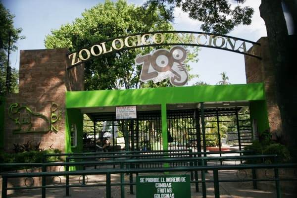
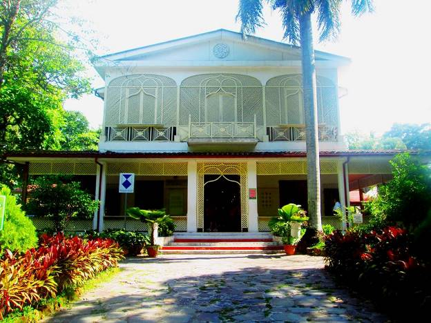
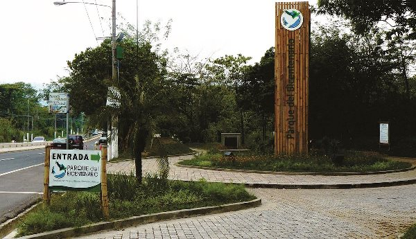
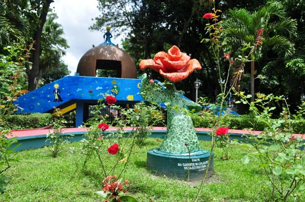
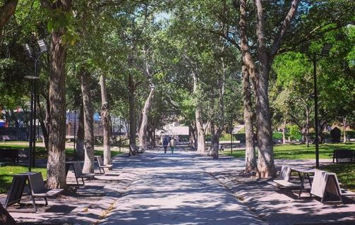

Los parques recreativos de El Salvador son lugares donde la naturaleza se hace presente en medio de las ciudades, y al mismo tiempo otras atracciones como juegos infantiles para los más pequeños, senderos para caminar, lugares de sano esparcimiento para la familia y otras actividades al aire libre.
También son reservas ecológicas en las cuales se puede encontrar abundante vegetación y que son como pulmones ecológicos para las ciudades, ya que en ellos se puede respirar un ambiente de tranquilidad. Algunos ejemplos de estos lugares podemos mencionar la Puerta del Diablo y parque Balboa, en los Planes de Renderos, un lugar con mucha historia cultural que encierra una increíble leyenda, y que también nos acerca a impresionantes vistas. Aquí se encuentran diversas áreas de entretenimiento para toda la familia, como pistas de patinaje, canchas de fútbol, ciclo vías, áreas de juegos infantiles, un laberinto, entre otros. Además, es ideal para degustar el sabor inigualable de las famosas “pupusas de los planes”.
Algunos de estos lugares marcaron la infancia de los salvadoreños y seguramente los recuerden con mucho cariño, como por ejemplo el parque de La Famila, el Parque Saburo Hirao y el Zoológico nacional. Algunas personas prefieren hacer turismo en este tipo de lugares porque de esta manera pueden sentirse cerca de la naturaleza sin ir tan lejos o gastar mucho dinero. Además son excelentes lugares para compartir en familia. Son muy visitados los fines de semana, la mayoría de ellos cuentan con seguridad para mantener el orden y además en ellos pueden encontrarse diversos lugares donde comprar comida o donde comprar souvenires o recuerdos de su visita
|  |  |  |
|---|---|---|
| Zoologico Nacional | Saburo hirao | Bicentenario |
|  |  | |
| Parque Infantil | Parque de la Familia | Parque Cuscatlan |